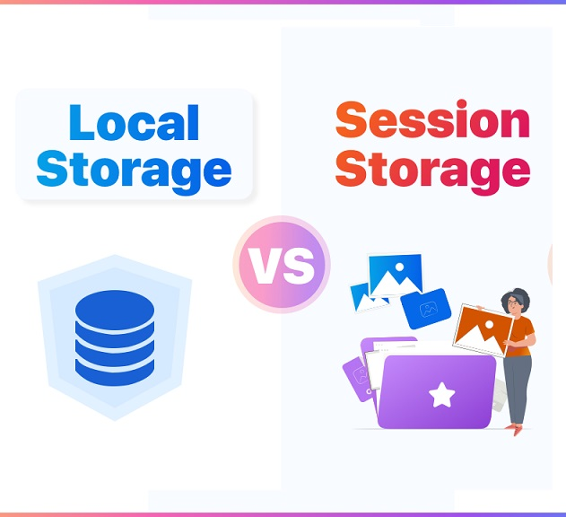

The difference between sessionStorage and localStorage is that localStorage data does not expire, whereas sessionStorage data is cleared when the page session ends.
LocalStorage is a type of web storage that allows you to access a local Storage object and store the data in the browser with no expiration date. This means the data stored in the browser will persist even after the browser window has been closed.
Local storage has 4 methods:
- setItem() Method
- getItem() Method
- removeItem() Method
- clear() Method
A new session is created each time a tab or window is opened, Closing a window/tab ends the session and clears sessionStorage objects.
Session storage has also 4 methods similar to Local Storage - setItem(), getItem(), removeItem(), clear();